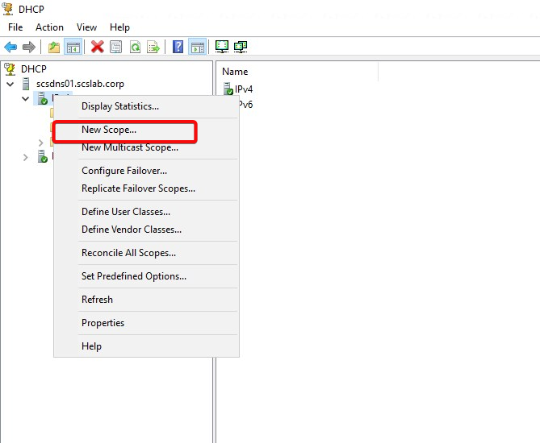
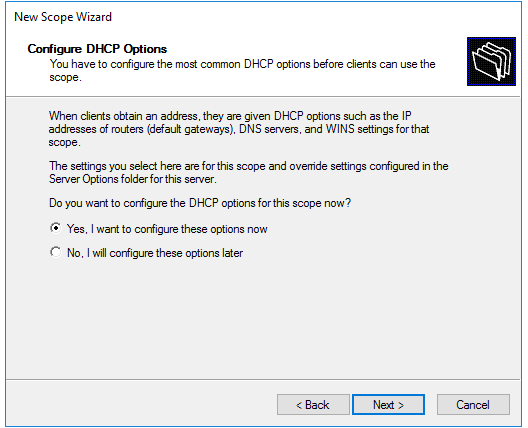
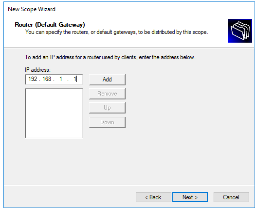
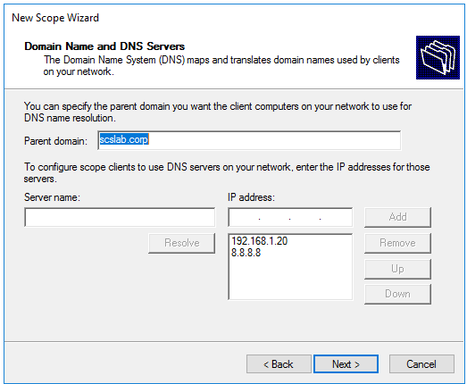

In this lab DHCP runs on a separate member server, not on the DC. Join it to the domain first (the same way as the client in task 12), because only a domain member can be authorized in Active Directory.
In a well-designed Windows Server environment—whether in a homelab or enterprise—separating server roles like DHCP, Active Directory (AD), and DNS enhances performance, security, and fault tolerance. This post covers how to install the DHCP Server role on a separate server (not on your Domain Controller or DNS server).
Before installing the DHCP Server role:
A domain-joined DHCP server must be authorized in Active Directory.
Open DHCP Manager (dhcpmgmt.msc).
Right-click the server > Authorize.
Wait a few moments, then refresh to see the green check mark.
In DHCP Manager, expand the server node.
Right-click IPv4 > New Scope.

Name your scope (e.g., LAN-Scope).
Define:
Add exclusions if needed.
Set lease duration (default is 8 days).

Provide:
Default Gateway: 192.168.1.1

DNS Server: 192.168.1.20 (the DC/DNS server, scsdc01)
Domain Name: scslab.corp

Activate the scope when done.
ipconfig /all to verify:Installing DHCP on a separate server provides a modular, scalable network setup and aligns with industry best practices. Whether you're building a production environment or testing in a homelab, separating DHCP from AD/DNS improves manageability and flexibility.